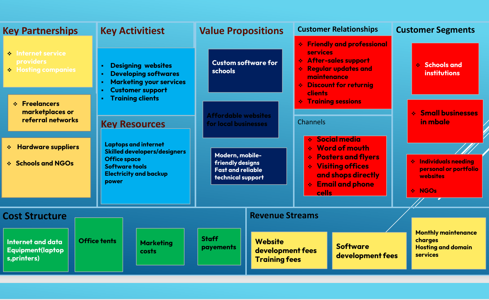

Here is an overview of our business model:

We provide affordable and practical digital solutions for schools, businesses, and communities. Using technology, we teach, empower, and transform lives.
Get in Touch
My name is Gertrude Kayagi, founder of Trudy Digital Solutions. I am passionate about using technology to improve education and support community development. I design websites, build simple systems, and train people to use digital tools confidently.
| Level | Year | Awards |
|---|---|---|
| High School | 2015 - 2018 | Best Student Award |
| Bachelor's Degree | 2024 - 2027 | second Class upper Honors |
| foundation software and website development | 2026 | Excellence in website development |
I am a student of computer and mathematics in bachelors of Education at the Islamic University in Uganda. This background helps me understand learners’ needs and design solutions that are simple, meaningful, and effective.
Here is an overview of our business model:
My mission is to provide affordable and practical digital solutions for schools, businesses, and communities while teaching and empowering people to use technology confidently for learning and development.
I live a purpose-driven lifestyle that balances learning, teaching, and service. I dedicate my time to improving my skills, helping others grow, and using technology to solve real-life problems in my community.
You can reach me through any of the platforms below: